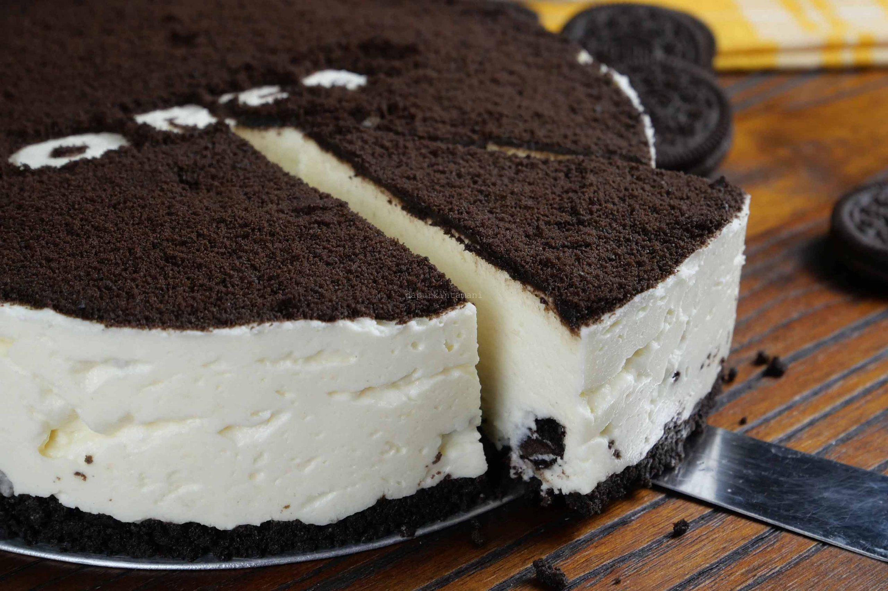

Oreo Cheese Cake

cake image by google
Cara Membuat Oreo Cheese Cake
- Haluskan bahan-bahan kue Oreo dengan menggunakan blender, sisihkan.
- Tuang adonan kue ke dalam wadah cupcake berdiameter 5 sentimeter hingga semua adonan habis.
- Tata dalam loyang, dan kukus selama 15-20 menit. Selanjutnya, keluarkan kue yang sudah makan dari cetakan, belah dua. Lakukan hingga semua kue terpotong.
- Siapkan gelas plastik, isi semua gelasnya dengan potongan bagian bawah kue hingga padat. Sementara, pisahkan potongan bagian atasnya untuk lapisan kedua.
- Lanjutkan dengan membuat krim keju, caranya aduk rata tepung maizena, gula, dan susu dengan kocokan besi, lalu masukkan parutan keju. Masak dengan api kecil hingga krim keju mengental.
- Tuang krim keju ke atas kue Oreo yang tadi sudah dimasukkan ke dalam gelas plastik. Lalu, masukkan potongan bagian atas kue dan tutup kembali dengan krim keju hingga membentuk lapisan. Lakukan hingga gelas plastik terisi. Masukkan sebentar ke dalam kulkas, dan sajikan.
Kembali